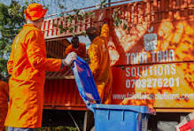

Our Projects
We engage in various projects aimed at environmental conservation, including tree planting, recycling programs, and community education.
Tree Planting
Join our tree planting initiatives to help reforest local areas and combat climate change. Learn more about the benefits of tree planting.
Recycling Programs
Our recycling programs aim to reduce waste and promote the recycling of materials. Read more about the importance of recycling.
Community Education
We offer workshops and seminars to educate the community on sustainable living practices. Explore resources for sustainable living education.